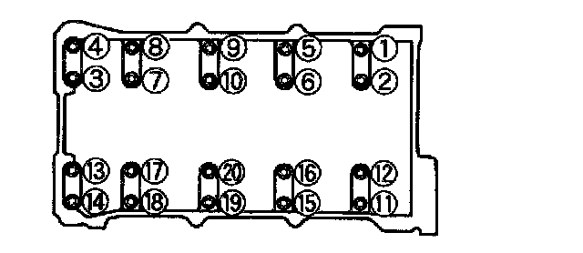
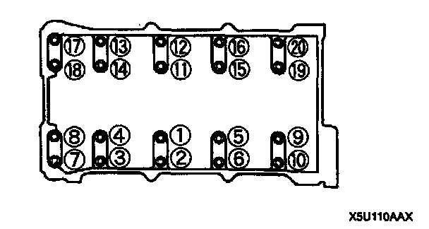

Operation CHARM
: Car repair manuals for everyone.
Home
>>
Mazda
>>
1999
>>
MX-5 Miata L4-1.8L DOHC
>>
Repair and Diagnosis
>>
Engine, Cooling and Exhaust
>>
Engine
>>
Camshaft, Lifters and Push Rods
>>
Camshaft Bearing
>>
Specifications
Camshaft Bearing: Specifications
CAMSHAFT BEARING
CAP SPECIFICATIONS
Torque
11.3-14.2 Nm (100-125 in lbs)
Camshaft Bearing Cap Disassembly Sequence:

Camshaft Bearing Cap Assembly Sequence:
